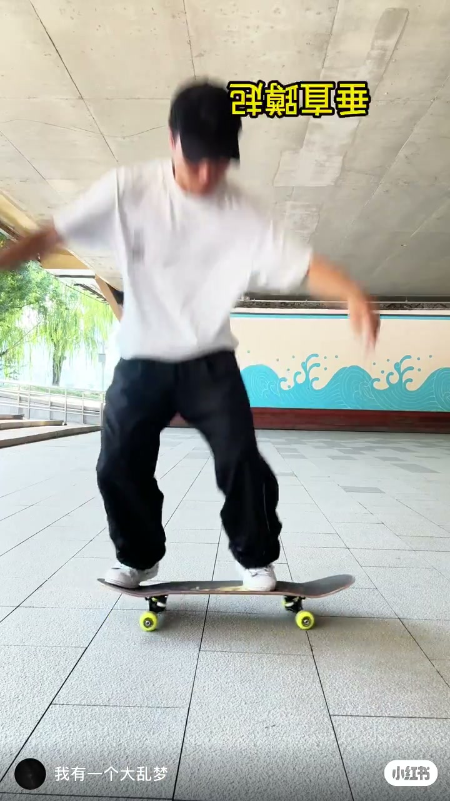
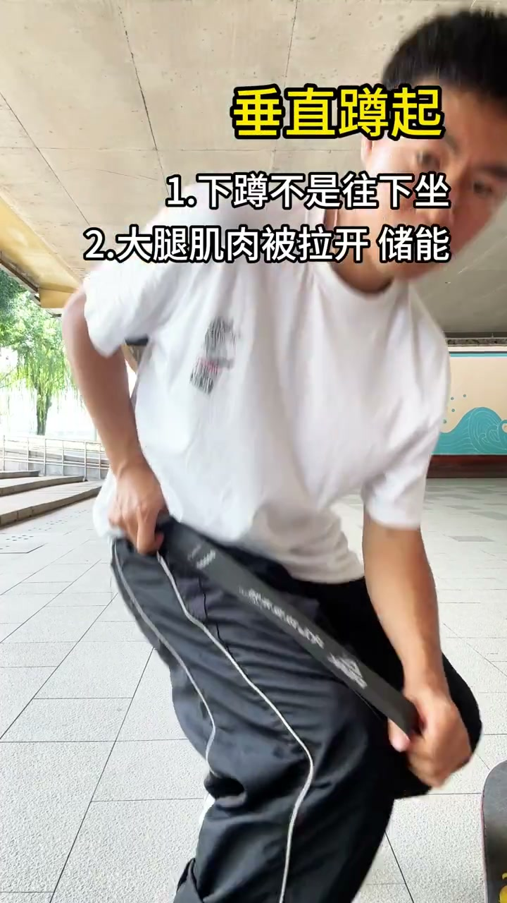
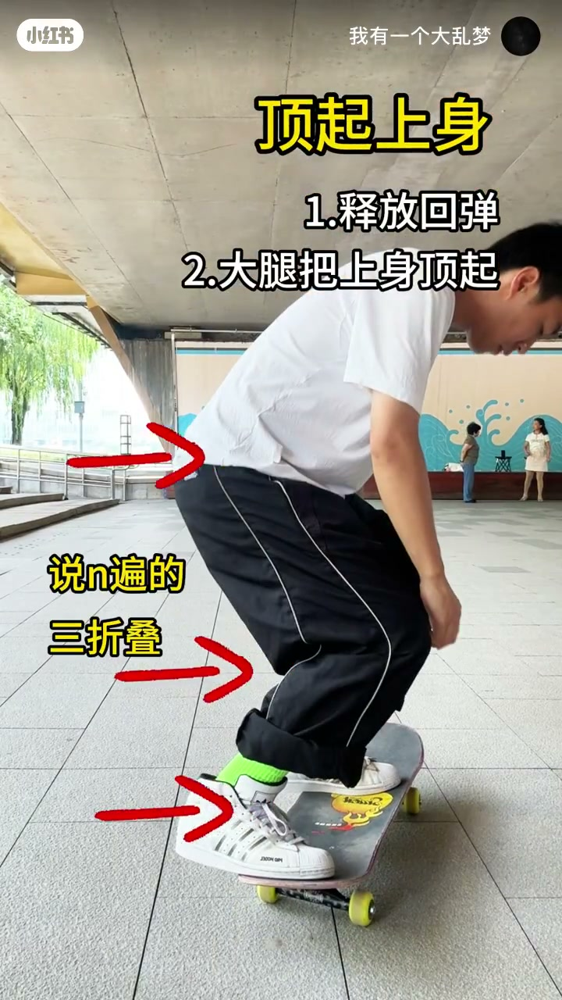
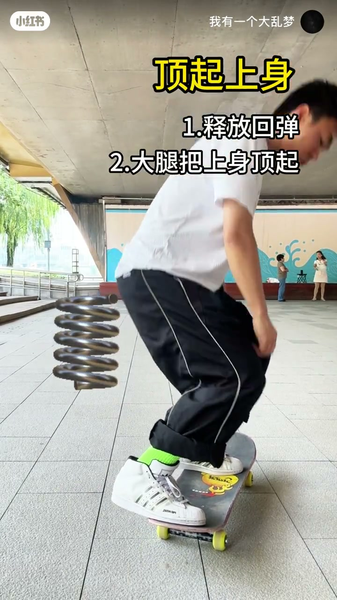
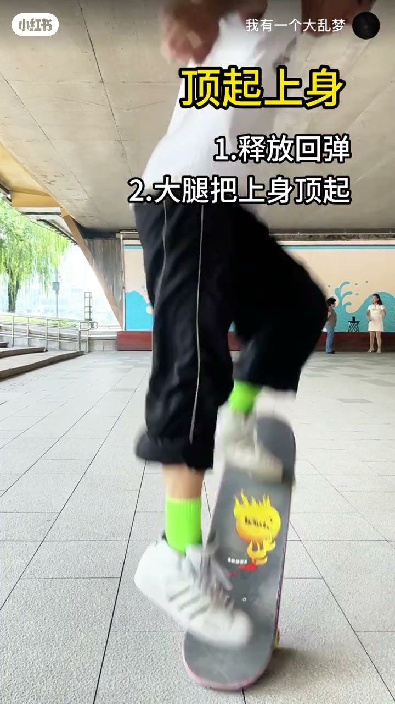
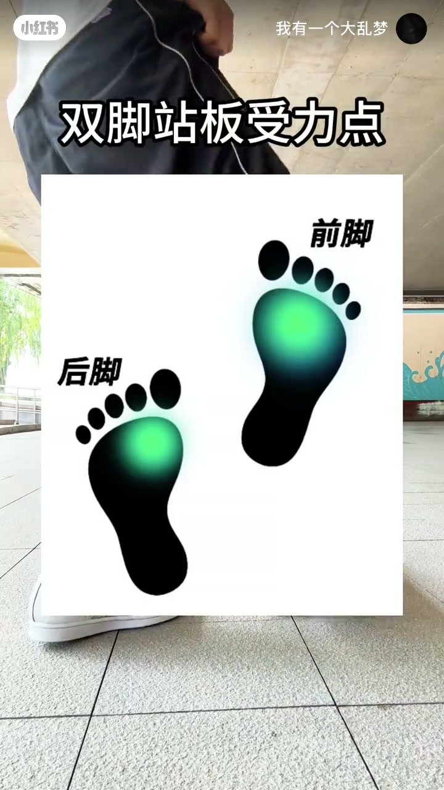

内容要点
这是一条画面驱动的短教学：主题是 Ollie 前的「垂直蹲起」——怎么蹲、蹲多深、起身靠什么发力。
知识结构
字幕直接否定「往下坐」；正确目标是把大腿肌肉拉开、像弹力带一样储存弹性势能，全程重心直上直下。
髋-膝-踝同时屈曲成「三折叠」；起身时释放回弹，用大腿把上身顶出去，而不是单靠脚蹬地。
作者笔记强调半蹲即可；示意图标明前脚与后脚的绿色受力点都落在前脚掌，方便爆发上顶。
先垂直拉开储能，再三折叠压实，一起身就把回弹顶进上身；半蹲、直上直下、前脚掌受力。
00:00 – 00:08垂直蹲起：纠偏与储能
开场就是站板半蹲滑行，右上角大字「垂直蹲起」把这一集的任务钉死。作者没有先讲完整 Ollie 流程，而是把镜头和字幕对准蹲伸本身：新手最容易把下蹲做成「往后坐椅子」，重心后移，后面很难干净地把板和人一起顶起来。

紧接着字幕列出两条：①下蹲不是往下坐；②大腿肌肉被拉开、储能。作者笔记里把同一原理写得更满——大腿像弹力带被拉开，储存弹性势能。视觉上他在桥下铺砖场地做半蹲演示，双手扶裤侧，躯干略前倾但没有明显后坐。

视频未单独口播「为什么叫第二步」；结合标题，可理解为 Ollie 入门序列里紧跟站姿/准备之后的蹲伸环节。伤病史与体能差异视频未交代。
00:08 – 00:20三折叠压缩与顶起上身
进入站板演示后，主题字幕切到「顶起上身」，并拆成两步：释放回弹；大腿把上身顶起。作者笔记同步强调——起身瞬间释放回弹，靠大腿把上身顶出去，不是单纯靠脚蹬地面。这把「蹬地发力」和「大腿上顶」拆开了：蹬地只是接触面反应的一部分，真正把躯干抛高的是伸膝伸髋带来的上顶。

画面还专门用红箭头点出髋、膝、踝三处折角，旁注「说 n 遍的三折叠」——意思是压缩时三处要一起折进去，而不是只弯膝盖、髋还僵直，或脚腕锁死。随后叠上金属弹簧特效，把「储能→回弹」做成一眼能懂的隐喻：蹲得越像压紧弹簧，起身越像松手弹开。

00:20 – 00:34爆发演示与站板受力点
压缩讲完，镜头给出真实起板爆发：尾部下压、板几乎竖起，人已经离地——对应字幕里「顶起上身」的后半段。作者笔记补充幅度与节奏：半蹲就够用，不用蹲太深；蹲下去要有大腿绷紧的拉伸感，起来要干脆有爆发力；滑行站位下全程重心直上直下。

收尾切到示意图「双脚站板受力点」：前脚、后脚脚印上的绿色光点都落在前脚掌（跖球区），而不是脚跟。结合前面的垂直蹲起，可以读成：压力压在前脚掌，才更容易把「直上直下」的蹲伸做成可回弹的弹簧，而不是坐死在脚跟上。

关于「蹲多深算半蹲」、个人站姿（regular/goofy）差异，视频只给原则不给量化角度；练习时以「大腿有拉伸感、能干脆弹起」为自评，不必硬抄画面深度。